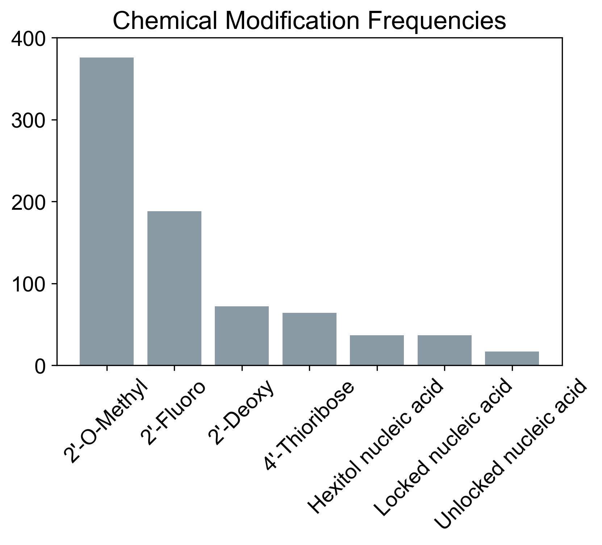
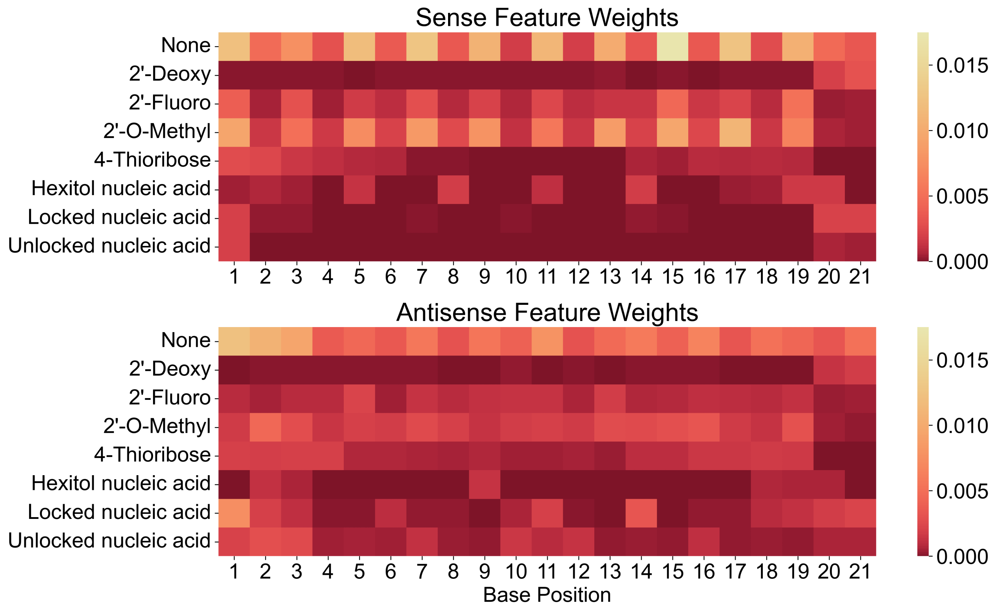

Predicting the activity of chemically modified siRNA
siRNA drugs switch off a chosen gene, and every approved one has had its chemistry altered to survive in the body. Tools that predict whether an siRNA will work were built on unaltered sequences, so this project asks whether a model can learn from the altered ones that drugs are actually made of.
The question
Can a machine learning model predict how well a chemically modified siRNA silences its target using only its base sequence and the pattern of chemical modifications along it?
Why it matters
siRNA therapeutics work by silencing a specific gene, and picking which candidate sequence to take forward is expensive to do in the lab. Earlier prediction tools were trained on unmodified sequences, but every approved siRNA drug carries chemical modifications that change its stability, its off-target behaviour and how long it lasts. A model that ignores those modifications is answering a different question from the one drug developers face. Sequence and modification pattern are also the two things always known about a candidate, long before anything harder to measure exists.


What I did
- Collected published siRNA sequences with measured silencing activity, all of them chemically modified, drawn from a public modification database plus a separate set assembled by hand from the primary literature for use as an independent check.
- Wrote scrapers to pull modification types and their positions along each strand out of database records that only existed as web pages.
- Encoded each duplex as the identity of the base and the modification at every position on both strands, so that position, not just presence, was available to the model.
- Trained three different model families, an ensemble of decision trees, a neural network and a linear classifier, and repeated the whole thing at several activity cutoffs, since published definitions of an effective siRNA disagree.
- Compared the models on how well they avoid false positives as well as false negatives, since an optimistic prediction is the more expensive mistake in drug development, and cross-validated the results.
- Read the weights the models assigned to individual positions and modification types against what the medicinal chemistry literature already says, as a check on whether the model learned chemistry or noise.
- Tested the trained models on the independently assembled set to see whether performance survived leaving the original data source.
What I found
- Sequence and modification pattern alone carry enough signal for these models to separate effective from ineffective siRNAs, which had not been shown before for modified sequences.
- The tree ensemble was the strongest performer, matching what earlier work found for unmodified siRNAs, while the linear model was easier to interpret despite scoring lower.
- Performance held up on sequences gathered separately from the training source, which suggests the models picked up general design principles rather than the habits of one dataset.
- The positions and modification types the models leaned on line up with patterns already described in the siRNA design literature.
Limits
- The training data come from published records, which are biased toward sequences that worked well enough to report, and toward the most common modification chemistries.
- Many clinical siRNAs are modified along their entire length, while much of the available data covers sequences modified at only a few positions, so the sequences the models learned from are not fully representative of what is in development.
- Modifications are encoded as categories rather than as chemical structures, and the models handle only one duplex length, so a genuinely new modification chemistry or a different length cannot be scored without retraining.
- The manuscript describing this work is unpublished and under review, so no results are quoted here.